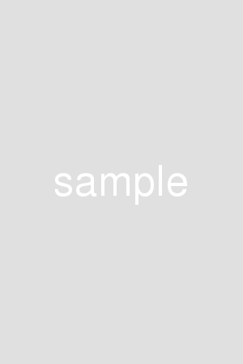

- 愛知工業大学情報科学部情報科学科
- メディア情報専攻
- 岡田 響
- 趣味： 漫画、アニメ鑑賞・ゲーム
チーム戦で全国で14位になった事があります
- これからも沢山の技術を習得してこのサイトを更新していきたいです。
- 持っているスキル： C, C++, Java, CSS, Photoshop, illustrator, Maya
AIT character
使用ソフト：Adobe illustrator
制作期間：4時間
作品説明：愛知工業大学のマスコットキャラクター を作成しました。
愛工大と言った略称から、愛→ハート→ピンク 工→歯車という特徴を考え、これらの特徴を組み合わせた愛おしいライオンをキャラクター にすることに決めました。
Competition Work
使用ソフト：Adobe illustrator
制作期間：3時間
作品説明：長崎市の鳥「ハト」のシンボルマークのコンテストに応募する 為の作品を作りました。
平和の象徴とされる「ハト」が幸福を表すものである 四つ葉のクローバーを運んでくるデザインにしました。

name
テキストテキストテキストテキストテキストテキストテキストテキストテキストテキストテキストテキストテキストテキストテキストテキストテキストテキストテキストテキストテキストテキスト
Maya Robot
使用ソフト：Maya
制作期間：2週間
作品説明：Mayaの授業で関節が２つ以上あるロボットが立方体を動かすと言うテーマのループアニメーションを作成しました。
自分はこのロボットがリフティングする動画を作りました。
どういった構成、動きにするのかを１から考えるのがとても大変でした。
Tea Set
使用ソフト：Maya Photoshop
制作期間：4週間
作品説明：Mayaの授業で4人グループで協力してティーセットを作成しました。
本物感を出せる様にわざと歪ませたり、陶器のテクスチャを貼ったり、柄をPhotoshopで加工して貼り付けたりするのが大変でした。
name
テキストテキストテキストテキストテキストテキストテキストテキストテキストテキストテキストテキストテキストテキストテキストテキストテキストテキストテキストテキストテキストテキスト
Dessert Recipe
使用技術：html
制作期間：4時間
作品説明：課題制作で、htmlのみを用いて作りました。
name
テキストテキストテキストテキストテキストテキストテキストテキストテキストテキストテキストテキストテキストテキストテキストテキストテキストテキストテキストテキストテキストテキスト
name
テキストテキストテキストテキストテキストテキストテキストテキストテキストテキストテキストテキストテキストテキストテキストテキストテキストテキストテキストテキストテキストテキスト